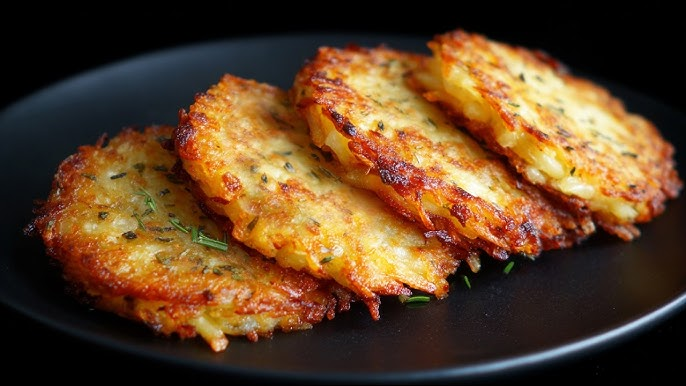

Description
This tutorial instructs determined individuals on how to make delicious hash browns from scratch. Follow along with the steps listed below to enjoy a crispy and tasty side dish!

This tutorial instructs determined individuals on how to make delicious hash browns from scratch. Follow along with the steps listed below to enjoy a crispy and tasty side dish!